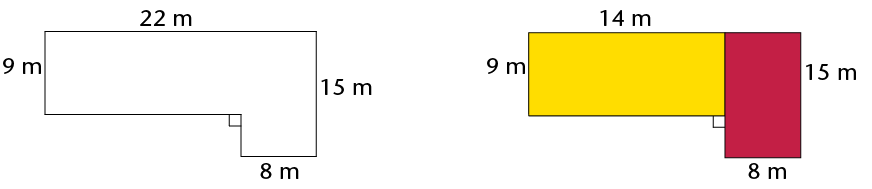

Oppervlakte en omtrek van 2d-figure
In hierdie hoofstuk gaan jy hersien hoe om die omtrek en oppervlakte van vierkante, reghoeke, driehoeke en sirkels te bereken. Die omtrek van ’n figuur is die totale afstand langs die sye van die figuur. Die oppervlakte van ’n figuur is die grootte van die plat oppervlak wat deur die figuur omsluit word. Jy gaan ook leer hoe om die oppervlaktes van parallelogramme, ruite, vlieërs en trapesiums te bereken, asook die uitwerking op die omtrek en oppervlakte van ’n figuur ondersoek wanneer die afmetings verdubbel word.
Die omtrek (P) van ’n figuur is die afstand langs die sye van die figuur. Die oppervlakte (A) van ’n figuur is die grootte van die plat oppervlak wat deur die figuur omsluit word.

|
Figuur |
Omtrek |
Oppervlakte |
Aantal 1 cm \(\times\) 1 cm vierkante |
|
A |
|
||
|
B |
|
||
|
C |
|
||
|
D |
|
||
|
E |
|
||
|
F |
|
||
|
G |
|
||
|
H |
|
Om te tesselleer beteken om ’n oppervlak met identiese figure te bedek op so ’n manier dat daar geen gapings of oorvleuelings is nie. ’n Ander woord vir tessellasie is verteeling.
- Sonder om te tel, skryf die totale getal
vierkante neer wat gebruik is om die reghoek
te vorm, insluitend dié wat versteek is.
Verduidelik hoe jy geredeneer het. - Wat is die oppervlakte van die reghoek, die wit
deel ingesluit?
Oppervlakte van ’n reghoek = lengte \(\times\) breedte
= \(l \times b\)
Oppervlakte van 'n vierkant = \(l \times l\)
= \(l^{2}\)
Beide lengte (\(l\)) en breedte (\(b\)) word in dieselfde meeteenheid uitgedruk.
- Ons kan die oppervlakte (\(A\)) van die kamer bereken deur die vloer in twee
reghoeke te verdeel, soos in die skets hier regs gewys word.

\(= (l \times b) + (l \times b)\\ = (14 \times 9) + (15 \times 8)\\ = 126 + 120\\ = 246 \text{ m}^{2}\)
- Die geel deel van die kamer het ’n houtvloer en die rooi deel het ’n mat. Wat is
die oppervlakte van die houtvloer? Wat is die oppervlakte van die mat?
- Bereken die oppervlakte van die kamer deur dit op ’n ander manier as in (a) hier bo in twee reghoeke te verdeel. Teken ’n skets.

- Omtrek \(= 2 \times (l + b) \)
- Omtrek \( = l + b + l + b \)
- Omtrek \( = 2l + 2b \)
-
Omtrek \( = l + b \)
Die volgende is ekwivalente uitdrukkings vir omtrek:
\(P = 2l + 2b \) en \(P-2(l + b)\) en \(P = l + b +l+b\)
Die volgende is belangrike formules om te onthou:
- \(d = 2 \pi r\) and \(r= \frac{1}{2}d\)
- Omtrek van ’n sirkel \((c) = 2 \pi r \)
- Oppervlakte van ’n sirkel \( (A) = \pi r^{2}\)
Die Engelse woord vir die middellyn van ’n sirkel is diameter (d) en die woord vir die omtrek van ’n sirkel is circumference (c).
- ’n Sirkel met ’n radius van 5 m
- ’n Sirkel met ’n middellyn van 18 mm
- ’n omtrek van 53 cm
- ’n omtrek van 206 mm

- ’n oppervlakte van 200 m2
- ’n oppervlakte van 1 000 m2

Onthou:
1 cm = 10 mm 1 mm = 0,1 cm
1 m = 100 cm 1 cm = 0,01 m
1 km = 1 000 m 1 m = 0,001 km
- 34 cm = ..........mm
- 501 m = ..........km
- 226 m = ..........cm
- 0,58 km = ..........m
- 1,9 cm = ..........mm
- 73 mm = ..........cm
- 924 mm = ..........m
- 32,23 km = ..........m
1 cm \(\times\) 1 cm
=0.01 m \(\times\) 0.01 m
=0.0001 m2Voorbeeld:
Herlei 50 cm2 na m2
1 cm2 = 0,0001 m2
50 cm2 = 50 \(\times\) 0,0001 m2
= 0,005 m2
- 650 mm2
- 1 200 mm2
- class="ques-a-">18 m2
- 0,045 m2
- class="ques-a-">93 mm2
- 177 m2
- Herlei 93 mm2 na m2
- Herlei 0,017 km2 na m2
\(\therefore\) Oppervlakte van parallelogram = basis \(\times\) loodregte hoogte
- Teken die parallelogram hier bo in jou oefeningboek oor.
- Gebruik die korter sy as die basis van die
parallelogram en volg die stappe hier bo om
die formule vir die oppervlakte van ’n
parallelogram af te lei.
Ons kan enige sy van die parallelogram as die basis gebruik, maar ons moet die loodregte hoogte gebruik op die sy wat ons gekies het.


Oppervlakte van ’n ruit = lengte \(\times\) loodregte hoogte


 \(\triangle\)DEG + Oppervlakte van \(\triangle\)EFG
\(\triangle\)DEG + Oppervlakte van \(\triangle\)EFG
\(\therefore\) Oppervlakte van ’n vlieër = \(\frac{1}{2}\) (hoeklyne 1 \(\times\) hoeklyne 2)
- 150 mm and 200 mm
- 25 cm en 40 cm


\(\therefore\) Oppervlakte van ’n trapesium = \(\frac{1}{2}\) (som van ewewydige sye) \(\times\)loodregte hoogte


|
Figuur |
Oorspronklike figuur |
Figuur met albei afmetings verdubbel |
|
A |
P = A = |
P = A = |
|
B |
P = A = |
P = A = |
|
C |
P = A = |
P = A = |
|
D |
P = A = |
P = A = |
- Wanneer albei afmetings van ’n figuur verdubbel word, word sy omtrek verdubbel en sy oppervlakte word verdubbel..
-
Wanneer albei afmetings van ’n figuur verdubbel word, word sy omtrek
verdubbel en sy oppervlakte is vier keer groter.
- Skryf die formules vir die volgende neer:
Omtrek van ’n vierkant
______________
Omtrek van ’n reghoek
______________
Oppervlakte van ’n vierkant
______________ Oppervlakte van ’n reghoek
______________
Oppervlakte van ’n driehoek
______________
Oppervlakte van ’n ruit
______________
Oppervlakte van ’n vlieër
______________ Oppervlakte van ’n parallelogram
______________ Oppervlakte van ’n trapesium
______________
Middellyn van ’n sirkel
______________
Omtrek van ’n sirkel
______________
Oppervlakte van ’n sirkel
______________ -
- Bereken die omtrek van die
vierkant en die oppervlakte van die
ingekleurde dele van die vierkant.

- Bereken die oppervlakte van die vlieër.

- Bereken die omtrek van die
vierkant en die oppervlakte van die
ingekleurde dele van die vierkant.